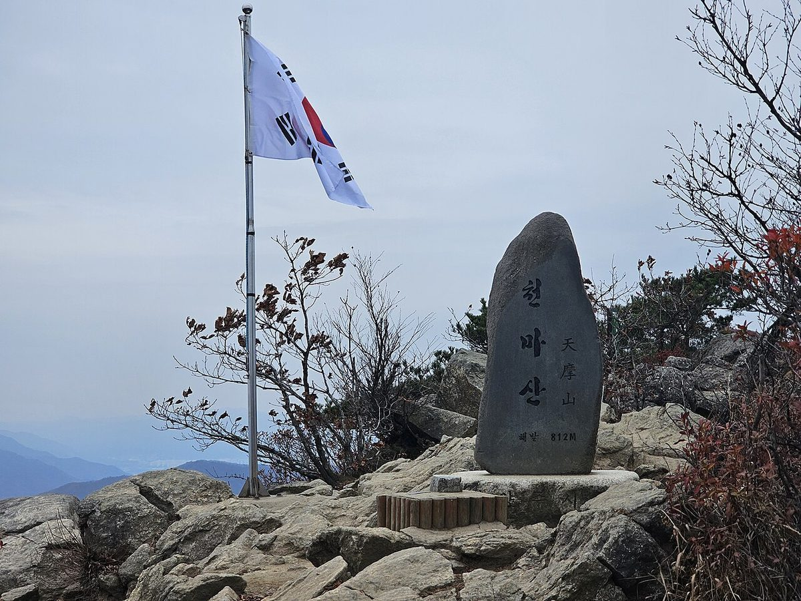
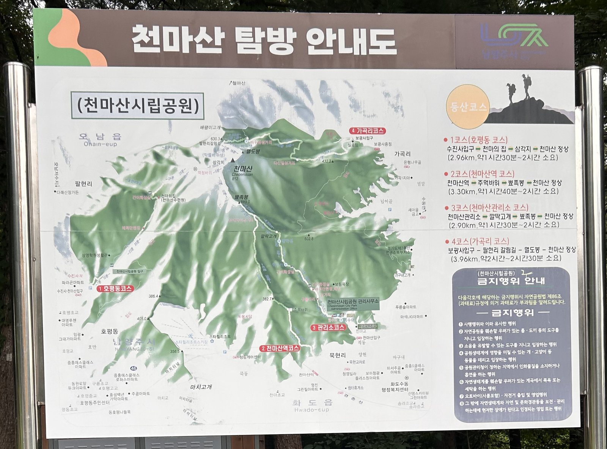
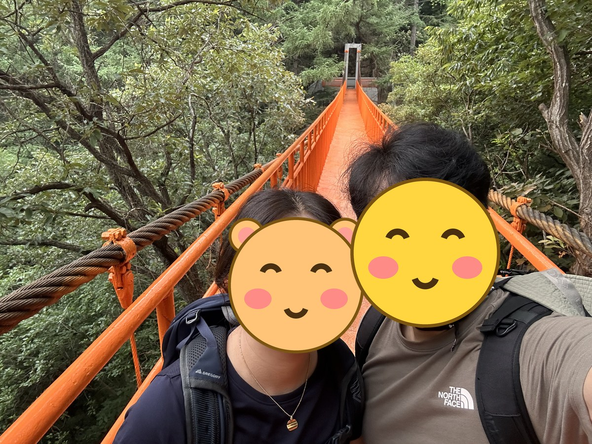
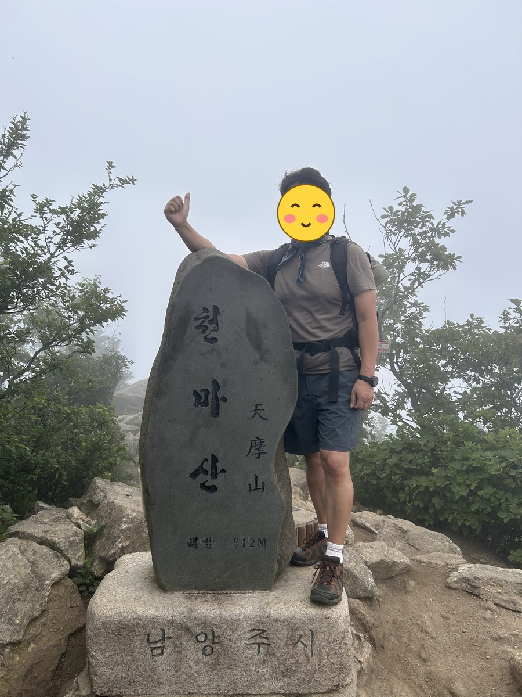
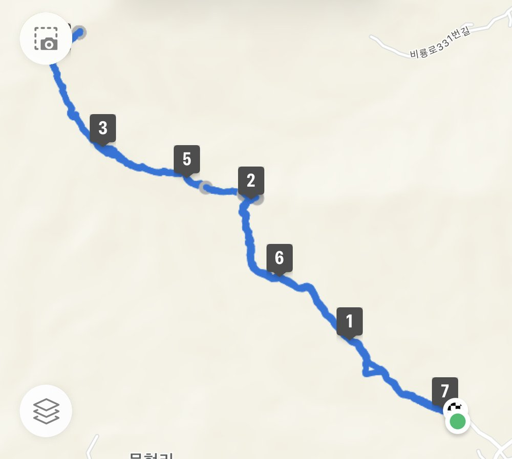

남양주 천마산은 산행 그 자체보다 야생화로 알려진 산입니다. 3월 하순부터 4월 하순까지 계곡을 따라 온갖 봄꽃이 피어나, 이 시기에는 카메라를 든 사람들로 붐빕니다.
야생화를 보려면 수진사 코스를 고르는 편이 좋습니다. 계곡을 끼고 이어져 꽃 종류가 가장 다양합니다. 호평동에서 시작하는 이 코스는 2.96km, 1시간 30분 수준으로 짧습니다.
임도 구간에서는 산딸기, 산괴불주머니, 매발톱꽃, 함박꽃나무 등을 만날 수 있습니다. 수진사에서 천마의집과 돌핀샘을 지나 팔현리로 내려서는 종주 코스도 있습니다.
등반기록
천마산 관리소(묵현리) → 구름다리 → 깔딱고개 → 뾰족봉 → 천마산 정상 → 같은 길로 하산
묵현리 천마산 관리소에서 출발
일요일 아침 7시 7분, 집사람과 함께 묵현리 천마산 관리소 쪽에서 출발했습니다. 탐방 안내도 기준으로 3코스(천마산관리소 코스)이고, 관리소에서 깔딱고개와 뾰족봉을 거쳐 정상까지 편도 2.9km로 안내되어 있네요.

숲속의 주황색 구름다리
출발하고 얼마 지나지 않아 숲 사이로 주황색 구름다리가 나타납니다. 다리 위에서 집사람과 한 컷 남기고 본격적으로 오르막에 들어섰습니다.

천마산 정상, 812m
9시 9분에 정상에 도착했습니다. 출발한 지 2시간 남짓 걸렸네요. 정상은 안개에 싸여 조망은 없었지만 정상석 앞에서 인증샷을 남기고 30분쯤 쉬었습니다.
하산은 올라온 길 그대로 내려와 11시 19분에 산행을 마쳤습니다. 총 7.06km, 4시간 12분이 걸렸네요.


정상 조망은 안개로 아쉬웠지만, 집사람과 함께 반나절에 다녀오기 좋은 산행이었습니다.
이 산의 포인트
- 3월 하순~4월 하순 야생화가 절정
- 수진사 코스 — 계곡을 끼고 꽃 종류가 가장 다양
- 호평동 코스는 2.96km·1시간 30분
- 수도권 전철로 접근 가능한 근교 산
등산 코스
| 코스 | 거리 | 소요 | 난이도 |
|---|---|---|---|
| 수진사(호평동) 코스 수진사 주차장 → 천마의집 → 능선 → 정상 |
약 2.96km(편도) | 1시간 30분 | 중 |
| 수진사 → 팔현리 종주 수진사 → 천마의집 → 돌핀샘 → 정상 → 팔현리 |
약 7km | 3시간 30분 내외 | 중 |
인증장소
천마산 정상 표지석 앞에서 인증합니다.
가는 길
- 자가용
- 수진사 천마산입구 주차장을 이용합니다. 야생화 철 주말에는 일찍 찹니다.
- 대중교통
- 경춘선 천마산역·평내호평역에서 버스나 도보로 접근할 수 있습니다.
주차장
- 천마산군립공원 주차장(수진사 방면)경기 남양주시 화도읍 묵현리
천마산 대표 들머리입니다. 봄 야생화 시즌에 사진가들로 붐빕니다.
- 천마산스키장 주차장경기 남양주시 화도읍 묵현리
겨울 스키 시즌에는 등산객 주차가 제한될 수 있습니다.
주차 요금과 면수는 자주 바뀌고 성수기에는 임시 주차장·셔틀이 운영되기도 합니다. 출발 전에 지도 앱이나 공원 사무소로 한 번 더 확인하세요.
맛집
남양주는 능이백숙과 오리요리 집이 많습니다. 인근 마석·평내 쪽으로는 손칼국수와 추어탕을 내는 오래된 집이 있습니다.
- 일호갈비탕경기 남양주시 화도읍 묵현로 105-1
직접 추천하는 집입니다. 들머리인 수진사 주차장과 같은 묵현리라 하산 후 바로 갈 수 있습니다.
- 천마산강장어들머리에서 1.1km경기도 남양주시 화도읍 경춘로 1793
- 논골추어탕들머리에서 0.5km경기도 남양주시 화도읍 묵현로 66-22
- 박가손칼국수들머리에서 4.5km경기도 남양주시 늘을1로16번안길 9-5 (호평동)
- 늘푸른정원들머리에서 5.7km경기도 남양주시 수레로640번길 77
한국관광공사에 등록된 음식점입니다. 맛집 순위가 아니며, 영업시간과 휴무일은 바뀔 수 있으니 먼 길이라면 미리 전화해 보세요.
언제 가면 좋은가
3월 하순~4월 하순 야생화가 압도적입니다. 가을 단풍도 좋고, 겨울에는 계곡 구간 결빙에 주의해야 합니다.
알아두면 좋은 것
- 야생화가 목적이라면 수진사 코스를 고르세요.
- 꽃 사진을 찍는 사람이 많아 좁은 구간에서는 서로 양보가 필요합니다.
- 전철 접근이 좋아 차 없이 다녀오기 편한 산입니다.